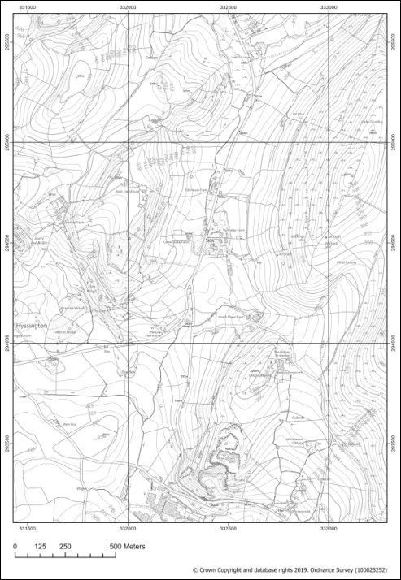
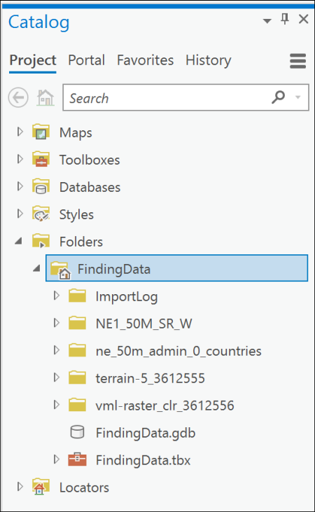
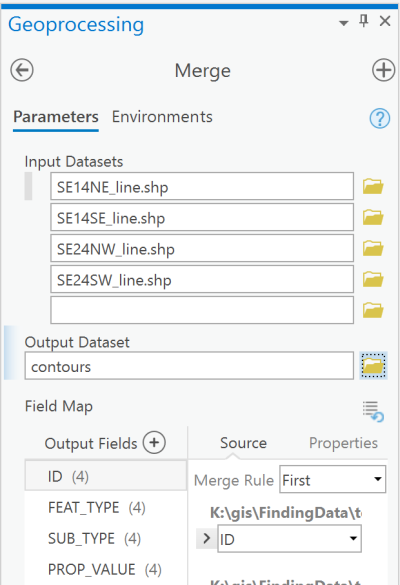
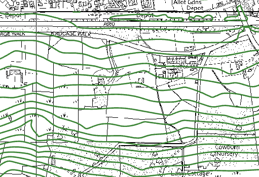
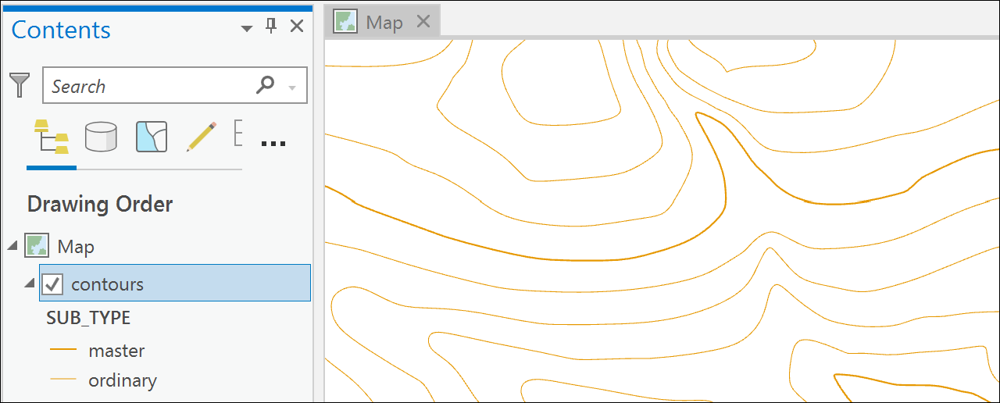
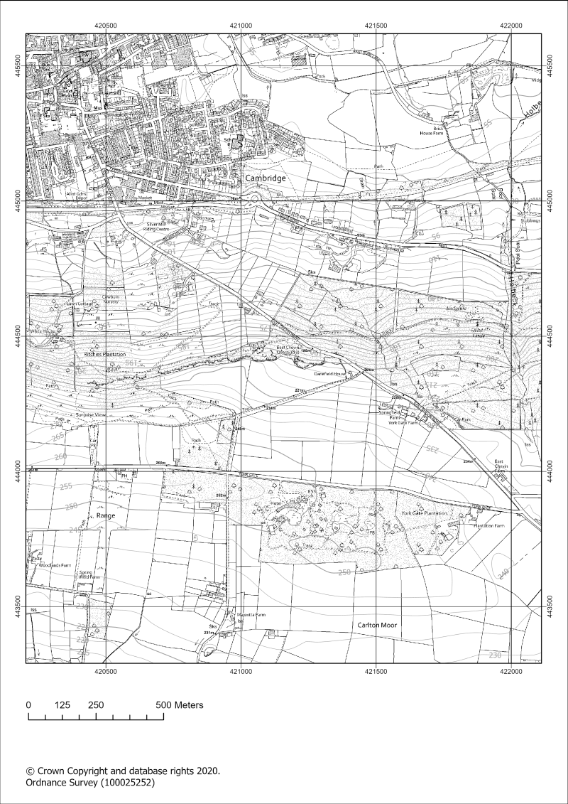

Data for GIS: Finding data and adding it to ArcGIS
The background to finding data and adding it to ArcGIS will be covered in the lecture segment at the beginning of the class, and the presentation and any other supporting materials will be available in Minerva. The lecture segment should help you to understand why you are doing these exercises. If you still aren’t sure, please ask Clare.
Learning outcomes
When you have completed this section of the workbook you should be able to
- demonstrate that you can find suitable data for GIS projects from a variety of sources
- describe the main types of data used in GIS
- use the tools provided in ArcGIS Pro to prepare data for further use
- find out essential information about the data and apply that to your use of the data in maps and reports
- acknowledge the data that you use in your maps in a suitable fashion
Finding data
Introduction
Being able to find, download and prepare your own data is an essential part of using GIS. While the data will be provided for you for many of the exercises in this module, you will find it useful to have some idea of where the data comes from, and what there is available for you to use for your own maps.
While downloading shouldn’t take too long, don’t leave it until the last minute before you have to produce a map. Websites can become unavailable either permanently or temporarily, or computers can crash.
Digimap
Digimap is a service provided to Higher Education in the U.K. by EDINA at Edinburgh University. Digimap provides a front end to digital maps and data of Great Britain from the Ordnance Survey and British Geological Survey, amongst others. The University of Leeds subscribes to the collections and as a student you have access to maps and data for use as part of your studies.
Logging in to Digimap
If you have not used Digimap before you will need to register and log in using your University ID, that is the username and password that you use to access University systems such as Minerva.
Full instructions for logging in are on the Digimap help pages.
- Go to the Digimap Collections page at https://digimap.edina.ac.uk
- Click the
Log inbutton at the top right of the screen - type
Leedsin the box and selectUniversity of Leedsfrom the list of available institutions - You should get the familiar University of Leeds log in page, so type your University username and password into the appropriate boxes and then click the
Log inbutton. If you are already logged in to Minerva you may find that you don’t have to enter your login details again.
If this is the first time that you’ve logged in to Digimap you’ll be asked to register for each collection separately, though you can do all at one go. You won’t need to use all of the collections during this module, but it’s worth registering for all that are available to you so that you can explore them for yourself. The University does not subscribe to Marine or Global Digimap.
- Go through the list of collections, read and accept the conditions for each one, selecting
Academic Works (coursework, projects, dissertations etc.)in thePurposedropdown for each.
Once you submit all of those you should be taken to the Digimap initial page again, as shown below, but this time you should see your name at top right rather than the log in button.

The list includes options for a large number of collections. In this workbook we’ll only be looking at the collections that are the most relevant for creating the maps you’ll need during your course, but if you are interested in any of the others feel free to explore them. EDINA have worked to make all of the tools similar across each collection, so just have a go!
Browsing maps on screen
Each Digimap collection provides a Roam and a Download interface. The Roam interface allows you to view the data from that collection on a map on screen.
Using Digimap OS Roam
As an example click on
Ordnance Surveyon the menu at the top of the main screenThen select
RoamunderView, annotate & print a mapon the right.Have a go at zooming in and out and exploring the map at different scales.
Try searching for a location in the
Searchbox at the top left.In this module we’ll be making most use of the Download interface, but it’s worth knowing what the Roam interface will do too, so have a quick go with a few of the tools on the left before continuing with the next exercise.

If you want more information about using the Roam interface have a look at the Digimap Resource Centre which is linked from Resources on the main page.
Downloading data from Digimap
Data Download is the tool for downloading data for use in GIS or CAD software. The format that the data is delivered in will determine whether you will be able to open it directly in a software package or whether you will need to convert it.
We’ll be using data from Digimap in ArcGIS for various exercises in the rest of this module, so you need to know your way around this section. Instructions for converting, importing and viewing file types that need it will be given later in the workbook.
As an example of the download interface we’ll download some Ordnance Survey data.
- Start from the Digimap main page (you can get back to it by clicking on the icon at the top right of the map - hover over to see a tool tip)
- click on
Ordnance Surveyin the menu at the top of the page - from the Ordnance Survey page choose
Data Download
Data Download takes you to a map that looks very similar to Digimap Roam, but with some important differences.
Selecting an area
On the left there is a menu panel with options for selecting an area, with a search box above it.
- Click in the
Searchbox and typeOtley, then pressEnteror click on the magnifying glass to search - When you get the results click on
Otley (Leeds)to zoom in, then close the search results - Under
Drawclick on the rectangle and use the mouse to draw a box around the area shown by an orange box in the image below, clicking to start and finish the box. It doesn’t matter if the box you draw is a bit bigger, but try not to make it any smaller.
Area view
Note that the map you see on the screen only shows the area that you will be downloading data for, not the actual data that you’ll be downloading. You’ll select the data in the next section so don’t worry what it looks like for now.
Selecting data sets
Now that you have selected an area you have to select the data that you need.
- Back in the panel on the left, under
Select Data Products, drop down each of the headings, e.g. Backdrop Mapping, in turn by clicking on the arrow next to them.

- There are a lot of different data sets here and most of them won’t mean anything to you. For now select the following data sets when you find them, by putting a tick in the box next to them.
- Backdrop mapping: VectorMap Local Raster
- Land and Height data: OS Terrain 5 Contours
You can get more information about the data sets by clicking on the arrow next to them. This includes information on licences - which you will need to know later.
The number on the right in brackets under Order Size shows how many tiles your selected area uses out of the maximum downloadable number. If you have chosen a slightly different area to me your number may be different but you should still be well within the limit.

- When you have selected the data you require click on
Add to Basket(Don’t worry, despite the Basket and Checkout you won’t be charged. The University has already paid the subscription.)
Your basket should appear with details of your order.

- Some datasets will give you an option to change the format. In this case click on
Select Formatnext to the OS Terrain 5 Contours. The choices are Shape, GML3 or DWG. ChooseShapein this case. - You may also need to select a theme. For the VectorMap Local Raster there is a choice of themes - pick
Black and whitefor this exercise, though it is worth downloading the others to have a look at them too. - Some items will have a
Clipoption. This means that the data will be sent to you clipped to the area outline that you requested. If you are short of disk space this is very useful as it restricts the amount of data you need to download, but otherwise it doesn’t hurt to have extra data around the outside of your study area. I prefer to untick this box and download full map tiles. - Give the order a name, e.g.
OtleyOS(for Ordnance Survey). This will be part of the file name of the zip file that you download, so try to make it short but helpful! - Click on
Request Download
Downloading your data.
You’ll receive an email confirming your order, then another with a download link. This can sometimes take a while to arrive, depending on how busy the service is.
Make sure that you are still logged in to Digimap before you click on the download link.
Once you have clicked on the link a browser window should open telling you that your order is ready to download.

- Click on
Download - You’ll download a zip file. NOTE: Don’t run or open the file directly from your browser, and make sure that you DON’T save your zip file to a temp folder where you will probably be unable to unzip it.
Warning
Make sure that you remember where you have saved the zip file.
Now open File Explorer (in Windows) and navigate to the location where you saved the zip file.
- Right-click on the compressed map data file that downloaded and choose to
Extract files...- or7-zip > Extract files...if you have 7-zip available. - Select where you want to save the extracted files, and make a note of where you save them to
You should end up with a folder for each dataset that you requested plus text files showing citations and contents. The folders will also have the order number as part of their name.
Viewing your data
In this case the files that you have downloaded are either tiff graphics files or shapefiles.
- Navigate to the data that you downloaded in the file explorer and find the folder called something like
vml-raster_bwr_3612556(your order number will be different). - you’ll also need to go into a folder with the OS grid letters - in this case for Otley it should be
se - Open one of the
.tiffiles by double-clicking on it - the file should open in a graphics program, but that depends what you have set up on your computer. Don’t worry if it doesn’t!
You should be able to see that this is basically a “picture” of a map.
- Try opening one of the
.shpfiles from theterrain-5_3612555folder too. It’s unlikely that you’ll be able to. Just cancel that and don’t try finding software that will open it!
Both folders will contain files that have similar names to the .shp and .tif files, but different file extensions. These won’t open in any programme but are essential for using the data in GIS programs such as ArcGIS, so make sure that you always keep these files together.
Both of these formats will open in ArcGIS Pro and we’ll have a look at these in the next section.
Keep the two datasets that you have downloaded for now. You will need to use them for the exercises in the section on adding data to ArcGIS.
Copyright acknowledgements for Digimap data
Copyright is important. Remember that most data providers ask you to sign up to conditions that include an obligation to add a copyright acknowledgement to your map. Check what that copyright statement is and add it.
When you signed up to use the Digimap collections you agreed to add copyright acknowledgements whenever you created a map with the data. The wording does change from time to time so it’s worth knowing how to check it for yourself.
To find these copyright acknowledgements:
- go back to the main Digimap home page
- go to the
Digimap Resource Centre(Resourcesat the top of the main Digimap page) - Look for a link to
Digimap Licence Agreementsunder Popular Resources and click on it - Click on the End User or Sub-licence agreement for the data that you’ve used - in this case the Ordnance Survey Collection
- You may need to download a pdf file rather than see it on a web page - do so and then open the pdf.
- then look for the information under
In return, you must:- that gives you the acknowledgement text.
For example, as of August 2020 when you use Ordnance Survey data obtained from Digimap you are expected to add the following text to your maps.
© Crown copyright and database rights year. Ordnance Survey (100025252).
Where year is replaced by the current year.
To add the copyright symbol - © - to your text
check that the
Num lockis on on the keyboardhold down the
Altkey on the keyboardthen use the number pad to type
0169release the
Altkey
Remember that you do have to acknowledge each different dataset that you use and will have signed up to that when you registered.
If you are not using U.K. Ordnance Survey data this is not the correct copyright acknowledgement to use. For example, if you are using data for Spain or the United States, or indeed UK data that you haven’t downloaded from Digimap. You’ll need to find the correct copyright acknowledgement for yourself.
Advice on citing Digimap data, as opposed to the copyright acknowledgement is given in the Digimap Resource Centre.
The GIS Lounge page on How to cite GIS materials gives some information about citing the software as well as the data. Have a look at that and follow the suggestions to cite non-Digimap data.
Other Digimap collections
In addition to Ordnance Survey Digimap you will also find that you’ll make use of some of the other collections, in particular Geology Digimap and Aerial Digimap. The Roam and Download interfaces work in a very similar way to the Ordnance Survey collection so you should find that you already know how to use them.
You have access to all of these collections so feel free to have a look at what is available and make use of any of the data or maps in your work.
Go into the
Historic DigimapCollection and useHistoric Roamto look up either your house or the University using old maps. Try the2 upview to see how you can compare old and new mapping of the same area.
Digimap Collections online help
Digimap help is available from each of the collection pages. Click on the links in the left-hand menu for more information about how to use the services and file formats.
Alternatively use the Help links from within Roam or Download or use the videos that EDINA have uploaded to YouTube
If you want more detailed information EDINA provide e-learning units which are linked from the main Digimap home page.
Data from the web
EDINA Digimap provides a wide range of useful data covering the UK, but you are also likely to need data from outwith the UK, or UK data that isn’t provided by Digimap. It isn’t possible to cover everything in this session, but I will show you one particular source which you should find useful.
Natural Earth Data
Natural Earth is a free, public domain dataset consisting of raster and vector data that will allow you to make maps at general scales. If you want a map of the World, or a general map of a particular country, this is a good starting point.
- Start by going to Natural Earth in your browser
The front page gives an overview of the principles behind the data and an idea of the scales at which it is available. You can find more information under the Features tab, including the file formats and the coordinate system - both important for using the data within GIS.
Go to the
Featurespage and make a note of the file types of both the raster and vector data provided by Natural Earth1, and of the coordinate system that the data comes in.
To download data either
- Click the
Get the Datagreen button on the front page - or click on the
Downloadstab at the top of the site - Choose the scale that you want to download and the type of data that you want, e.g. cultural, physical or raster
For this exercise download the following data:
-
Medium scale data, 1:50m > Cultural > Admin 0 - Countries- click on theDownload countriesbutton to download a zip file. Make a note of where this file is saved to on your disk. -
Medium scale data, 1:50m > Raster > Natural Earth 1- click theDownload small sizebutton underNatural Earth 1 with Shaded Relief and Water. Again, make a note of where the zip file is saved.
Keep these data layers for later exercises. If you are working on a University computer you will need to make sure that the files are within your own disk space, either on your M: drive, or a USB drive. If you are working on the VWD make sure that you save the data to your network (M:/ drive).
Have a look at the summary of the data on the Features page. If you wish try downloading other datasets. You can try adding them to ArcGIS Pro in the next section.
Natural Earth data copyright
Finding and acknowledging the copyright of data is very important.
- Return to the Natural Earth front page
- Look at the text in the box next to the
Get the Databutton. One of the links there is to theTerms of Usepage. Click on that now.
Read the Terms of Use of Natural Earth data
How should you acknowledge the Natural Earth data if you use it in one of your maps?
The terms of use do say that “Crediting the authors is unnecessary”, however, it is still a good idea to add the data acknowledgement to your map to avoid any possibility of plagiarism. You can choose whether to use the short or long text listed on the page. Adding the url of the data can also be a very good idea.
ESRI Living Atlas
The ESRI Living Atlas is a fantastic resource of maps and data that you can add to your own maps. Follow the instructions below to have a look at some of the data, but it’s worth exploring further and seeing what else is available to you.
Download a blank project
You’ll work in a blank ArcGIS Project for this exercise so go to this week in Minerva and download the zip file - LivingAtlasEx.zip.
- Unzip the file to your GIS folder and double-click on the
.aprxfile to open the project in ArcGIS Pro. - You should find you have a map of the World
Adding data from the Living Atlas
- In the Catalog pane on the right of the screen click on the heading for
Portal - The panel will open with a row of icons at the top. Hover over each of those to see what they are, then click on the icon for
Living Atlas
- Start by typing
volcanoin the search box and press the enter key
A lot of the entries will be in Japanese, but if you hover over each layer you’ll see more information about them.
- Hover over the entry for
Significant Global Volcanic Eruptions

The information for Significant Global Volcanic Eruptions tells you that it is a Feature Layer (Hosted). This means that it is a layer, not a map, and that it is hosted on an ESRI ArcGIS web server.
- Double-click on the
Significant Global Volcanic Eruptionsheading to display the layer(s) that make up this data - In this case there is only one layer -
Significant_Volcanic_Eruption - Right-click on the heading for the layer and
Add to current map
The data should appear on your map (it can be slow to appear), with a key in the Contents pane on the left.
Zoom in and pan around.
Try using the Explore tool to click on some of the little volcano symbols that should have been added to your map. You should get more information about significant eruptions.
Also right-click on the layer and open the
Attribute table- have a look at the data that has been included for each eruption.
Return to the search box on the Living Atlas panel and try some other searches, for example search for geology.
Look at the information for some of the entries that appear then try adding some of the other layers in your search results to your map by right-clicking and either adding to the current map, or to a new map. In some cases, they will open as a new map, in others they should be added to your existing map.
Try some of your own searches to see what else is available, e.g. a particular country.
You can experiment at this stage. It doesn’t matter if something goes wrong or ArcGIS crashes. You don’t need to keep this map and you can easily open a new copy.
Finding other data online
These are just a few examples of finding useful data for GIS. Through out the rest of the workbook you’ll be downloading your own data from Digimap. If you need data from elsewhere I’ll either give full instructions or provide the data for you, but tell you where I got it from.
If you are looking for data for a particular project it is well worth searching online using your favourite search engine (e.g. Google). Put the words “gis” and “data” into your searches and it should help you to find relevant data.
I have put together a short list of possible data sources which you are welcome to use to find data and maps.
Adding data to ArcGIS
Introduction
In this section you will be creating a map from scratch using the data that you downloaded earlier in the chapter. You will create a 1:10 000 topographic base map that is suitable to use as a fieldslip for geological field mapping, and later as a basis for digitising geological data.

By creating this map you will also learn how to find out more about your data and how to use the tools available to process it before adding it to your map.
Obtaining the data
If you have followed the section on Digimap in the previous section you should have downloaded and kept examples of the following data
- Digimap
- VectorMap Local Raster
- OS Terrain 5 Contours
If you haven’t downloaded those, or have but can’t find them, then please return to the instructions for Digimap OS Collection and download them now, then come back here.
You should have set up a folder called gis when you worked through the introduction. If not, go back and follow those instructions now. (Though remember that if you are working on the VWD you will need to work with your data on the Desktop then copy it back to your network drive.)
- Create a new folder called
FindingDatain thegisfolder on your disk - Copy or save all of the Ordnance Survey data you have downloaded from Digimap into this folder
Unzipall of the zip files, if necessary, into this folder.
You should end up with a folder structure something like the image below.

Keeping all of your data in the same project folder as the rest of your map data means that it is much easier to find it and you can keep a copy of the whole project as a backup so that you don’t lose data.
Starting a new map project
In the previous chapters you used an ArcGIS project that I had set up for you. This time you need to set up your own project from scratch.
- Open ArcGIS Pro by going to the Start Menu and searching for it, or by using AppsAnywhere.
- Make sure that you have found ArcGIS Pro, not any other version of Arc or ArcGIS, and open that program

- When the ArcGIS Pro splash screen opens click on the
Mapitem to openNew > Blank Templates > Map

You’ll get a form to fill in with the project details.
- for
Namefill inFindingData- the same as the folder you’ve just put your data in - for
Locationbrowse to theFindingDatafolder that you put your data in, enter it, then clickOK - Untick the box next to
Create a new folder for this project - Click
OK

Doing it this way ensures that you are keeping all of your data in the project folder, which will help you to find it later.
ArcGIS should open a new map with a view of the World. This is the default ESRI basemap and is a general layer which is useful as it gives you some idea of where you are when you zoom in. The section on Using basemaps in the first chapter of this workbook shows you how to select alternative basemaps.
In the Folders part of the Catalog pane you should see several new files and folders appear in the folder in which you have created the project, for example, FindingData.gdb; ImportLog; FindingData.aprx.

If you open up the folders you should be able to see the data too. If you can’t and you are sure that you put your data in that folder, make sure that everything is unzipped.

Adding downloaded data to your map
One thing to remember when adding data to a map is that the first layer that you add sets the spatial reference, or coordinate system for that map. When downloading data from Digimap the raster layers don’t always have coordinate system information, so it makes sense to start by adding the vector layers.
Start by having a look at your data so that you know more about it. You are going to be creating a map of Britain with the spatial reference of British National Grid so need to check whether all of the layers are set to that.
- In the
Catalogpane, look for each of the datasets that you downloaded in turn - right-click on one of the data files - which in this case will either have an extension of
.tifor.shpdepending on which dataset you are looking at - go to
Propertiesand have a look at the information under the subheadings there.

Make a note for yourself of the following properties for each dataset (if you’re not sure, just have a go! It doesn’t matter if you are wrong). You’ll need to drop down some of the subheadings by clicking on them.
- is the data vector or raster?
- what is the data type?
- what is the Projected Coordinate system?
- what is the Geographic Coordinate system?
When you’ve finished close the Properties dialog by clicking either OK or Cancel.
Remember that the lecture segment for this practical covered the differences between vector and raster file formats. If you are still unsure please go back and have another look at the presentation on that.
Your notes should show something like the following -
| Data | Vector or raster? | Data type? | Projected coordinate system? | Geographic coordinate system? |
|---|---|---|---|---|
| OS Terrain 5 contours | vector | Shapefile feature class | British National Grid | GCS OSGB 1936 |
| OS VectorMap Local raster | raster | File system raster | British National Grid | GCS OSGB 1936 |
Adding vector data
Now that you have decided which layers are vector, and which have the correct coordinate system for your final map, you can start to think about adding the data to your map.
We’ll start with the OS Terrain 5 contours because they are a vector layer and have the projected coordinate system British National Grid, which is what we want our map to be in.
Merging contour shapefiles
The next thing to check is how many separate shapefiles have you downloaded for this area?
- In the Catalog find the folder containing the Terrain 5 contour layers and drop down so that you can see the contents
- you’ll need to drop down the subfolders too, until you can see something like the image below

You should find that you have multiple files, some of which have point as part of the name, some of which have line as part of the name, and a few files with an extension of .xml.
You can ignore the point files and the xml files.
How many line shapefiles do you have?
In my folder, shown above, I have four line shapefiles.
Try adding these files to your map by dragging and dropping them into the top of the Contents. You can select multiple files to add by holding down the Ctrl key and clicking on each of them.
Arc should zoom to the area of your tiles. You should find that you have something like the image below (though possibly with a different number of tiles). You have contour lines, but Arc has assigned a different colour to each tile.

At the moment the shapefiles are still four separate files, and if you styled them you would have to style each one in turn. It makes sense to combine, or merge these files into one.
If you only have one tile of contour data you don’t need to merge it, but you should have a minimum of two for this exercise.
- Remove the contour files from your map
Creating a base map with OS data: 1. Merging contour shapefiles
This video clip can be found in the module area of Minerva or in the full list of video clips.
- From the Analysis tab of the ribbon find
Mergein the Analysis Gallery of the Tools group - I found it in theManage Datasection - and click on it. - OR go to the Analysis tab of the ribbon, click on
Toolsto open the toolbox panel on the right, thenToolboxes > Data Management Tools > General > Merge - Add all line contour shapefile tiles as the input by clicking on the folder icon to the right of the
Input Datasetsbox- You may need to include files from more than one sub-folder. Remember that you only need to add the line shapefiles, not the point.
- to add more than one tile at a time use the
Ctrlkey and then click on each file
- Click on the folder icon next to
Output Datasetand save your output to the project geodatabase, that is the file with the same name as your project and an extension of.gdb, and give the output feature class a name such ascontoursthat will help you to identify it again later - leave the rest of the fields as the defaults
Run- Arc should merge your shapefiles, add them to the geodatabase and then zoom in and display them on your map

If Arc doesn’t take you to the correct location for your data, remember that you can Zoom to Layer by right-clicking on the contours layer in the Contents and selecting Zoom to Layer from the context menu.
You should end up with something like the image below with a random choice of a single colour for all of your contours. The ESRI basemap layer still shows behind the contours and helps you to see that your contour layers are appearing in the vicinity of Otley.

If you need to save disk space, or even just want to tidy up your data, you can now delete the folder containing the original contour data. If you need it again you can either unzip the file that you downloaded from Digimap, or just redo the download.
Checking the coordinate system of your map
Now that you have added your first layer it is a good idea to check that the coordinate system of your map is correct.
Remember that we are creating a map which should be in British National Grid.
- In the Contents pane right-click on the
Maptitle at the top of the list - select
Propertiesfrom the context menu - go to the
Coordinate Systemssubheading and check theCurrent XY

The Current XY should be British National Grid - but if it isn’t don’t panic.
- Look in the box below which shows
XY Coordinate Systems Available - Find your contours layer and click on it and the
Current XYentry should change to match it. - Once you have the correct coordinate system click
OK
If your contours are set correctly, the Current XY should change to British National Grid to match.
If this doesn’t work, or you don’t have a layer in British National Grid try the following
- In the
searchbox above theXY Coordinate Systems Availablebox typeBritish National Gridand press return - You should see the result in an opened out list under Projected coordinate system (you may need to click on the subheadings to open them out) - click on the entry for
British National Grid - Once you have the correct coordinate system click
OK
Adding raster data
Now we’ll move on to the VectorMap Local raster data. The name rather gives it away for this one, though it is a bit confusing, but this is a raster format.
If you remember, back in the Digimap section, you opened this file to have a look at it. It should have opened in an image editor, and is basically a picture of a map. You’ll be using this as a detailed background layer for your map as it should show more information than the ESRI basemap layer. Because of this, if you have more than one tile of data you don’t need to merge them. You can just add multiple files to the map and they will still show as the background.
Other raster data layers contain data, rather than being a picture. You can add them in the same way, but they will serve a different purpose. You’ll investigate these sorts of layers later in the course.
This video clip can be found in the module area of Minerva or in the full list of video clips.
To add the raster tiles
- Find the file or files2 in the
Folderssubheading of the Catalog Pane.- The background files from Digimap should be under a folder called something like
vml-raster-bwr - and have names like
vml-raster...tif
- The background files from Digimap should be under a folder called something like
- then simply drag and drop the raster file(s) from the Catalog pane to the Contents pane so that they are placed below the contour layer, but above the ESRI background layer. Don’t forget that you may have files in more than one folder.
- If you are offered the choice of creating
PyramidssayYes3
If you end up with entries such as Band_1 in the catalog don’t add those layers. Make sure you add the tif file directly.
Your raster maps may appear rather bad quality, this is usually just an onscreen problem. When you print your map, or zoom in close, it should be fine.
Zoom in and pan around to check that the VectorMap Local raster background map looks right with your contours, e.g. that the contours don’t go straight through the middle of lakes, or that streams don’t appear to flow uphill. Always check your data - don’t assume it will be correct!
If you have a clipped layer the background map may well not cover the same area as the contours - don’t worry about that.
If you think the black and white background is too dark/strong you can always fade it a bit by using Transparency
Set the scale of your map to 1:10 000. Your map should look something like the image below, though probably with the contours a different colour.

Removing the ESRI background layers
This is a good point at which to remove the ESRI base map layers, e.g. World Topographic Map and World Hillshade, so that they don’t cause problems later. These layers are useful, but can slow ArcGIS down when you have a map in a projection which isn’t Web Mercator, and can cause Arc to crash.
- Right-click on each of the basemap layers in turn in the Contents
Remove
Remember to save your map at regular intervals. It won’t auto-save.
Either go to
Project > Saveor use the keyboard shortcutCtrl-S
Symbolising the data on your map
Symbolising is the word that ESRI use for the process of making your data look good - this could also be described as styling.
Your map now shows the required data, but doesn’t quite look right. The VectorMap Local raster data is fine - that is already styled and there isn’t anything else you need to do with it.
The contours also need to be changed to grey rather than the current random colour, and they are rather thick. They also need to have labels added showing the height or they aren’t being informative.
Setting the reference scale
Before you start symbolising and labelling your layers it is a good idea to set the reference scale to the scale at which you are intending to print the map. In this case you are putting together a fieldslip and you are most likely to need to print it at either 1:10 000 or 1:5 000. Setting the reference scale will ensure that when you choose styles or the label size they will look the same as they will once your map is printed.
- Start by setting the scale of your map to 1:10 000, using the dropdown below the map view
- In the Contents pane right-click on the title of your map - usually
Map - Click to
Set Reference Scaleand it’s done
You can reset the reference scale just by going to a different scale and doing the same, or you can clear the reference scale completely if you wish to.
Styling the contours
Now that the contour lines are in your project you need to symbolise them so that they look professional. For this take inspiration from the British Geological Survey published maps4.
This video clip can be found in the module area of Minerva or in the full list of video clips.
- Select your contours layer in the contents pane then click on the
Appearancetab of the ribbon and click on theSymbologybutton to open the Symbology pane to the right of your map.
Symbolising as unique values
It is good practice to symbolise your contours so that most are of a standard width, but contours at a regular interval are made slightly thicker. This makes it easier to interpret the heights.
Check the attribute table for your contour feature class (right-click on the layer in the contents pane and select Attribute table.
For Ordnance Survey contour data there will be a column which divides the contours into master and ordinary. If your area is on the coast you may also have high and low water mark.
Make a note of the column name, you’ll need that for setting the symbology.
- In the symbology pane change the dropdown under
Primary SymbologytoUnique Values - Dropdown the box next to
Field1and change it to the column that you made a note of above
Arc should automatically classify your data as the number of different sub-types in your feature class and give them a random colour.
You will also end up with a value labelled all other values. You don’t need it for this map so the next step shows you how to get rid of this.

- To get rid of
all other values- on theClassestab click on theMorebutton which has a little down arrow - Untick
Show all other values
You shouldn’t notice any difference on your map, but it will tidy up your contents pane, and if you were going to add this layer to a map legend it would stop it showing there too.
Styling the contour lines
Back in the first chapter you styled the layers on the Malham map. This is a similar process so it should seem familiar.
The automatic / default styling of the contour lines is unlikely to be satisfactory. To style the two different types of line
- Click on the symbol to the left of one of the line types on the
Classestab - Check that you are on the
Propertiestab of the next panel, not the Gallery - Change the colour and line width as suggested below - you can play around with the settings later when you see what they look like on the map
- Go back to the symbology pane between each value so that you symbolise both the master and the ordinary contours
For a black and white or greyscale map
- Color = Grey 40%
- Line width
- Master / index contour = 0.8 pt
- Standard / ordinary contour = 0.4 pt
- Click
Apply

For a faded colour map
- Color = Seville Orange (hover over the colour patches to see their names!)
- Line width
- Master / index contour = 0.8 pt
- Standard / ordinary contour = 0.4 pt
- Click
Apply

Labelling the contours
It is essential to add labels to the contour lines to show the height. Without labels contour lines are basically worthless.
This video clip can be found in the module area of Minerva or in the full list of video clips.
Have a look at the attribute table of the contours feature class again.
Again, make a note of this, you’ll need it for labelling the contours.
To label the contours
- Select the contour layer in the contents panel
- Click on the
Labelingtab of the ribbon - then click on the
Labelbutton at the far left of the ribbon
Labels will appear on your map, but they are unlikely to be the labels that you actually need.
To change the content of the labels
- In the
Label Classgroup of the labeling tab use theFielddropdown to select the field that you made a note of above - the one which holds the information about the height of the contour
The labels should change to the height. But if you have a closer look at the contours you should notice that the labels don’t actually appear on top of the lines to which they refer. You need to change the Label Placement.
- In the
Label Placementgroup of the labeling ribbon use the arrow on the right to find theContourssetting (I find that this doesn’t always work first time so keep an eye on it). - If you click on the little arrow in the bottom right corner of the group you should open the
Positiontab of theLabel Classpane - Drop down the
Placementsubheading and you should be able to check the settings there
The contour placement should set your labels so that they are on top of the lines and curved, which is how contour labels appear on Ordnance Survey maps. Now you need to change how the text looks.
- Click on the
Symboltab of the Label Class dialog - Drop down the
Appearancesubheading - From there you’ll most likely need to set a smaller font size, e.g. 8 pt, and change the colour of the text symbol to match the colour of the contours
- Once you’ve changed the settings click
Applyto see what they look like. You may need to wait a bit while Arc applies them - labelling contours can slow things down rather.

You can try out alternatives to see what looks best. Remember that the contours and their labels need to be present and visible so that they can be used in map reading, but not so large that they dominate the map. If in doubt, check OS or BGS published maps as suggested at the start of this section.
Creating a layout for printing
You will need to add various map elements to a layout for your field slip. You will work through a whole chapter on Layout and Presentation later in this module, but for now you’ll do a quick version.
- Go to the
Insertribbon and click onNew Layout - Select
ISO - Portrait > A4 - On the ribbon click on the arrow under
Map Frameand select your map - Now click on the page and draw out a “box” - don’t worry too much about the area/size for now
- At the bottom of the screen change the scale to
1:10 000to zoom in to your map. In this example it doesn’t really matter which part of the map is showing on your layout. - With the map still selected click on
Gridon the ribbon then selectMeasured Grid > Black Vertical Label Gridto add grid references around the outside of your map - Click on
Scale Barin theMap Surroundsgroup and select any of theMetricscale bars and then click on the blank area around the map to add it to your layout - Use the text tools to add the following copyright text for the Ordnance Survey data that you have used. The copyright symbol doesn’t seem to work if you try typing it on the layout directly. Double-click on the Text item in the Contents and a properties dialog should open on the right where you can type the text you want.
© Crown copyright and database rights 2020. Ordnance Survey (100025252)
You can play with the settings for the elements you have added, but we will be looking at layout and presentation in more detail later.
Your final field slip map should look something like the map below:

You saw how to print or export your map at the end of the Introduction to GIS.
Export your map now, either as pdf or png.
Backing up your projects
When you’ve finished Save your map and close ArcGIS Pro. You’ll need this project in a later chapter so make sure that you know where you have saved it.
If you are working in the VWD save your work to your network drive now.
It is always a good idea to keep a backup copy of your work at regular intervals. If Arc or your computer crashes, or you delete the folder by mistake, it’s essential that you can retrieve a copy so that you don’t lose everything you have done so far.
The easiest way to do this is to Copy the whole project folder to either your OneDrive space or a USB memory stick.
If you want to save space you can zip the folder first
- by right-clicking on it then either
Send to... > Compressed (zipped) folderon Windows- or if you have 7-zip
7-Zip > Add to name.zip- where name is probably the name of the folder.
You can then move or copy the zip file to OneDrive or a USB stick.
-
Remember that you looked up definitions of raster and vector in ArcHelp in the introduction. Refresh your memory now if you need to. ↩
-
If, when you downloaded the data from Digimap, you selected to
Clipthe data you will probably only have one tile or file of data. If you selected not to clip, you will probably have multiple tiles or files. ↩ -
Pyramids take a moment to create when you first load the file, but make it much quicker to move around in your map once they are loaded. ↩
-
You can see the scanned geological maps online on the BGS website. Try to make sure that you look at a recently published example such as the 1:25 000 Ardnamurchan Central Complex map published in 2009. You won’t find the BGS 1:10 000 maps online. ↩